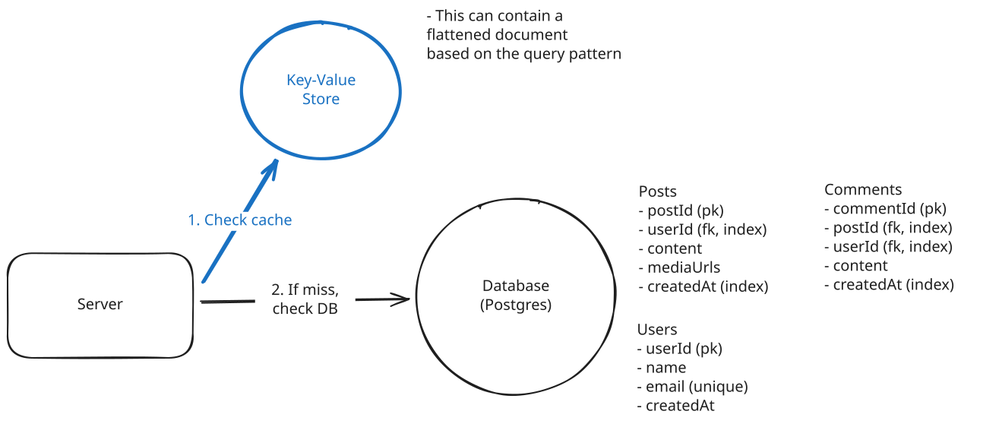
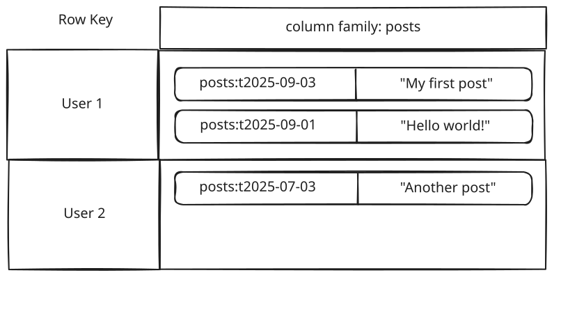
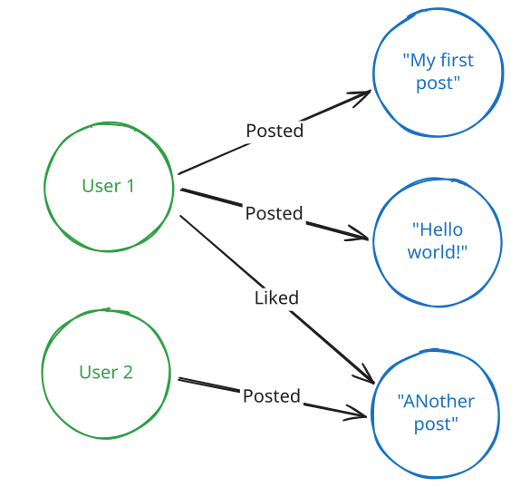
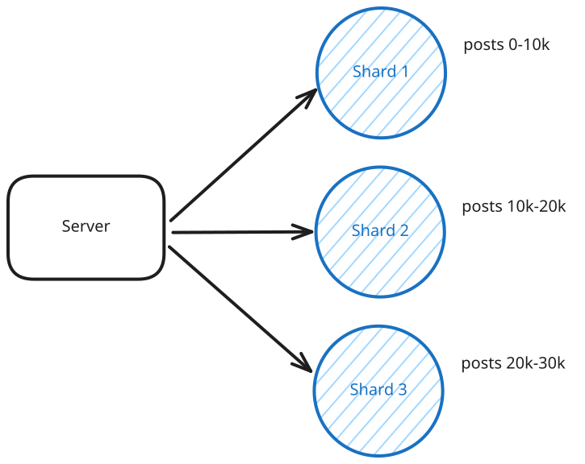

Core Concepts
Data Modeling
Learn about data modeling for system design interviews
Data modeling is the process of defining how your application’s data is structured, stored, and related. In practice, this means deciding what entities exist, how they’re identified, and how they connect to one another. For a system design interview, the bar is much lower than in a dedicated data modeling interview (commonplace in data engineering loops). You’re not expected to normalize everything or produce a complete schema diagram, you’re just expected to design something clear, functional, and aligned with your system’s requirements.
In the Delivery framework, this comes up twice. First, during requirements gathering, you’ll identify your core entities. These usually map 1:1 with tables or collections and form the backbone of your schema. Later, in the High-Level Design step, you'll sketch a basic schema alongside your database component. Include the key fields, relationships, and a note on how you'd index or partition to support the main query patterns. That’s enough for most interviewers to see that your data model won’t crumble under expected usage.

Data Modeling in an Interview
Still, a reasonable schema is more than box-drawing. It sets up the rest of your design, such as scaling reads and writes, preserving consistency when it matters, and answering questions about growth or auditability without backtracking. A sloppy data model can lead to painful issues later. A solid, “good enough” one lets the conversation stay focused where it belongs.
Database Model Options
Before you can design a schema, you need to pick what type of database you're working with. Different database models shape how you structure your data, so this choice affects everything that follows.
In interviews, the temptation is to show off by choosing exotic database types. Resist this. Most of the time, the right answer is a relational database. It's the default unless your requirements clearly signal a specialized model. Unless you have significant experience and, with it, strong opinions about another database, my recommendation is to stick with PostgreSQL.
That doesn’t mean other database models aren’t worth knowing. Showing you understand when they might be useful demonstrates that you’re thinking about trade-offs, not just parroting the default. Still, the star of the show is SQL, so we’ll start there before briefly touching on the alternatives.
Relational Databases (SQL)
Relational databases organize data into tables with fixed schemas, where rows represent entities and columns represent attributes. They enforce relationships through foreign keys and provide ACID guarantees for transactions.
Most system design problems map naturally onto this model. A social media app has users, posts, comments, and likes, all entities with clear relationships. An e-commerce system has users, products, orders, and payments. These fit neatly into relational tables where constraints and foreign keys preserve integrity.
Users table:
| id (primary key) | username | created_at | |
|---|---|---|---|
| 1 | john_doe | john@example.com | 2024-01-01 10:00:00 |
| 2 | jane_doe | jane@example.com | 2024-01-01 10:05:00 |
| 3 | bob_smith | bob@example.com | 2024-01-01 10:10:00 |
Posts table:
| id (primary key) | user_id (foreign key) | content | created_at |
|---|---|---|---|
| 1 | 1 | Hello, world! | 2024-01-01 10:00:00 |
| 2 | 1 | My first post | 2024-01-01 10:05:00 |
| 3 | 2 | Another post | 2024-01-01 10:10:00 |
Likes table:
| id (primary key) | user_id (foreign key) | post_id (foreign key) | created_at |
|---|---|---|---|
| 1 | 1 | 1 | 2024-01-01 10:00:00 |
| 2 | 1 | 2 | 2024-01-01 10:05:00 |
| 3 | 2 | 3 | 2024-01-01 10:10:00 |
SQL is great at handling complex queries. If you need to fetch "all posts by users that a given user follows, ordered by recency," joins make that straightforward. However, be careful with multi-table joins like this - they can become performance traps at scale. In interviews, mentioning complex reporting-style queries often raises yellow flags about performance, so you'll want to think through whether they're actually performant enough or if you need denormalized views, caching, or pre-computed results. And when strong consistency is a non-functional requirement, like ensuring payments don't double-charge or inventory doesn't oversell, SQL's ACID guarantees are the right tool for the job.
The usual knock on relational databases is scalability, but this is often exaggerated. Modern SQL databases scale with techniques like read replicas, sharding, connection pooling, and caching. Some of the largest companies in the world (Facebook, Airbnb) rely on relational foundations. Scaling isn't just about the database you choose, but how you architect around it.
Document Databases
Document databases store data as JSON-like documents with flexible schemas, making them good for rapidly evolving applications where you don't know all your data fields upfront. Your data modeling becomes more about nesting and embedding related information within documents rather than normalizing across tables.
Notice how the same data from our SQL example gets restructured. Instead of separate tables, we embed posts directly within each user document. This eliminates joins but means updating a post requires finding and modifying the entire user document.
Users collection:
{
"_id": "507f1f77bcf86cd799439011",
"username": "john_doe",
"email": "john@example.com",
"posts": [
{
"content": "Hello, world!",
"created_at": "2024-01-01T10:00:00Z"
},
{
"content": "My first post",
"created_at": "2024-01-01T10:05:00Z"
}
],
"created_at": "2024-01-01T10:00:00Z"
}System design interviews intentionally scope functional requirements to a clear, concise set. This means you're unlikely to have "evolving schemas" in the first place, which removes the main reason to choose document databases. Only consider them if your interviewer explicitly mentions rapidly changing data structures.
When to consider over SQL: When your schema changes frequently, when you have deeply nested data that would require many joins in SQL, or when different records have vastly different structures. A user profile system where some users have extensive work histories while others have minimal data fits this pattern.
Data modeling impact: You'll denormalize more aggressively, embedding related data within documents to avoid expensive lookups across collections. This trades storage space and update complexity for read performance.
Example technologies include MongoDB, Firestore, and CouchDB.
Key-Value Stores
Key-value stores provide simple lookups where you fetch values by exact key match. They're extremely fast but offer limited query capabilities beyond that basic operation.
When to consider over SQL: For caching, session storage, feature flags, or any scenario where you only need to look up data by a single identifier. They're also good for high-write scenarios where you need maximum performance and don't need complex queries.
"Over SQL" is misleading here. In practice, you'll often use both together. SQL as your source of truth with a key-value cache (like Redis) in front for hot data. This gives you fast access without sacrificing durability or complex queries.
Data modeling impact: Your schema becomes very flat. You'll denormalize heavily and duplicate data across multiple keys to support different access patterns, since you can't join or query across relationships. This is great for reads but terrible for consistency when data changes.

Key-Value Cache
Wide-Column Databases
Wide-column databases organize data into column families where rows can have different sets of columns. They're optimized for massive write-heavy workloads and time-series data.
When a user creates a new post, you add a new row keyed by (user_id, timestamp). Rows with the same partition key (user_id) are stored together, making writes fast (just append to the partition) and reads efficient (scan a contiguous range of a user's posts).

Wide-Column Database
When to consider over SQL: When you have enormous write volumes, time-series data, or analytics workloads where you primarily append data and run aggregations. Think telemetry, event logging, or IoT sensor data.
Data modeling impact: You'll design around query patterns even more than with SQL, often duplicating data across different column families to support various access patterns. Time becomes a first-class citizen in your modeling.
Graph Databases
Graph databases store data as nodes and edges, optimizing for traversing relationships between entities.

Graph Database
When to consider over SQL: Honestly? Almost never in interviews. The classic examples are social networks and recommendation engines, but even Facebook models their social graph with MySQL. If it's good enough for the world's largest social network, it's probably good enough for your interview.
Example technologies include Neo4j and Amazon Neptune.
Graph databases are a common mistake in interviews. They sound sophisticated but add unnecessary complexity. Even "graph-heavy" companies like LinkedIn and Twitter use SQL for their core relationship data. Other databases can handle the primary query patterns without the operational complexity that comes with specialized graph systems.
Schema Design Fundamentals
Once you've picked your database type, you need to design a schema that supports your system's requirements.
Start with Requirements
Everything flows from three key factors that require careful consideration and were likely already determined during the requirements gathering and api design phases.
Data volume determines where your data can physically live. A social media app with millions of users might need data spread across multiple data stores, which drives schema design choices. If user data and post data need to live on separate systems for performance or organizational reasons, they necessarily need distinct schemas with careful consideration of how they reference each other.
Access patterns are the most important factor and drive most of your design decisions. How will your data be queried? A news feed that loads "recent posts by followed users" suggests you'll want denormalized data or carefully designed indexes. An analytics dashboard that aggregates data across time periods might need different table structures entirely. This comes naturally from your APIs. Just ask what queries will I need to support each endpoint?
Consistency requirements determine how tightly coupled your data can be. Financial transactions need strong consistency (no partial charges), which often means keeping related data in the same database with ACID guarantees. But a user's activity feed can handle eventual consistency (it's okay if a like shows up a few seconds later), which allows you to distribute that data across separate systems with different schemas optimized for different access patterns.
In interviews, explicitly tie your schema choices back to these factors. For example, "Since we need to load feeds quickly and likes can be eventually consistent, I'll denormalize like counts into the posts table." That shows you're reasoning instead of memorizing patterns.
All of the schema design techniques that follow (entities, keys, normalization, indexes, sharding) are just tools to address these three factors.
Entities, Keys & Relationships
Once you’ve identified your core entities, the next step is to map them into tables (or collections) with clear identifiers and relationships.
For a social media app, you might have users, posts, comments, and likes. Each entity needs a primary key to identify individual records. Use system-generated IDs like user_id or post_id rather than business data like email addresses. System-generated keys stay stable even when business rules change.
users: id (PK), username, email
posts: id (PK), user_id (FK → users.id), content, created_at
comments: id (PK), post_id (FK → posts.id), user_id (FK → users.id), content
likes: user_id (FK → users.id), post_id (FK → posts.id)This shows the core relationships: each post belongs to one user (posts.user_id), each comment belongs to one post and one user, and likes connect users to posts. The (PK) marks primary keys, (FK) marks foreign keys with arrows showing what they reference.
In interviews, just pick an obvious primary key and explain why. "post_id will be our primary key so we can uniquely identify each post and reference it from comments and likes."
With entities defined, connect them with relationships:
- One-to-many (1:N): a user has many posts, a post has many comments.
- Many-to-many (N:M): users like many posts, posts are liked by many users.
- One-to-one (1:1): rare in practice, often a sign that two tables should just be merged.
These relationships are enforced through foreign keys in SQL (e.g., posts.user_id → users.id) or by application logic in NoSQL. Foreign keys help ensure referential integrity - meaning they prevent orphaned records like a post referencing a user that doesn't exist, or comments pointing to deleted posts. However, they come at a cost because the database has to validate each insert/update. At very large scale, some companies drop them for write performance and enforce integrity at the application level. In an interview, mentioning them shows you understand the trade-off.
Finally, layer in constraints like NOT NULL, UNIQUE, or CHECK. These enforce correctness at the database level (emails must be unique, prices must be positive). They protect data quality, though they also add write overhead.
Keep your schema grounded in the problem domain: users, tweets, follows if you're modeling Twitter, not abstract "entities" and "relationships." Then show how keys, foreign keys, and constraints keep that model correct and scalable.
Indexing for Access Patterns
Indexes are data structures that help the database find records quickly without scanning every row. Think of them like the index in a book - instead of reading every page to find "normalization," you look it up in the index and jump directly to page 149. While data modeling in an interview, you'll typically want to callout which columns are indexed and why.
Your indexes should directly support your most important queries. For a social media app:
- Index on posts.user_id to quickly find all posts by a user
- Index on posts.created_at to load recent posts chronologically
- Composite index on (user_id, created_at) to efficiently load a user's recent posts
For a deeper understanding of how indexes work under the hood, different index types (B-trees, hash indexes, etc.), and advanced indexing strategies, see our Database Indexing deep dive.
In interviews, connect your indexes directly to your API endpoints. "The GET /users/{id}/posts endpoint needs an index on posts.user_id" shows you're thinking about real query performance.
Normalization vs Denormalization
Normalization means storing each piece of information in exactly one place. User data lives only in the users table, not duplicated across other tables. This prevents data anomalies where updates happen in one place but not another, leaving your system with inconsistent state.
Normalized:
| id | username | |
|---|---|---|
| 1 | john_doe | john@example.com |
| 2 | jane_doe | jane@example.com |
| id | user_id (FK) | content | created_at |
|---|---|---|---|
| 1 | 1 | Hello, world! | 2024-01-01 10:00:00 |
| 2 | 1 | My first post | 2024-01-01 10:05:00 |
Denormalized:
| id | user_id | username | content | created_at | |
|---|---|---|---|---|---|
| 1 | 1 | john_doe | john@example.com | Hello, world! | 2024-01-01 10:00:00 |
| 2 | 1 | john_doe | john@example.com | My first post | 2024-01-01 10:05:00 |
In the denormalized version, if a user changes their username, you'd have to update every single post they've ever made. Miss one update and you have inconsistent data.
In system design interviews, start with a clean normalized model and denormalize only when needed. Avoid repeating data in your schema design. Repeating data is wasteful and creates consistency problems that are much harder to solve than the performance problems you're trying to avoid.
There are a few key exceptions where denormalization might make sense:
- Analytics and reporting systems where you're aggregating data that changes infrequently
- Event logs and audit trails where you're capturing a snapshot of data at a point in time
- Heavily read-optimized systems like search engines where consistency is less critical than speed
That said, even if you need denormalized quick access for performance, you can just put a cache in front that has a denormalized representation of the data. Your source of truth stays clean and normalized, but your cache can have pre-computed joins, aggregations, or whatever structure makes reads fast.
Scaling and Sharding
When your data gets too large for a single database, you need to shard it across multiple machines. The key is choosing a partition strategy that keeps related data together.
Shard by the primary access pattern. If you mostly query "posts by user," shard by user_id. This keeps a user's posts on the same database, avoiding expensive cross-shard queries.
Be careful with time-range sharding. While it sounds appealing for "recent posts" queries, all current writes hit the same shard (the latest time range), creating a hot shard. This is usually an anti-pattern for write-heavy systems. Time-range partitioning works better for archival or analytics workloads where recent data is read-heavy but writes are spread out.
Avoid cross-shard queries whenever possible. If your timeline feature needs to show posts from multiple users a user follows, and you've sharded by user_id, you'll have to query multiple shards and merge results. This is expensive and complex.

Sharding
Your choice of shard key is often permanent and affects every query. Think carefully about your primary access patterns before choosing how to shard your data.
Conclusion
Data modeling is a core part of system design interviews, but it's not the focus. Your goal is to show that you can design a reasonable schema that supports your system's requirements, then move on.
Start by outlining your core entities early in the interview. Then, when introducing a database component during the high-level design:
- Determine the type of database you'll use
- List the columns needed to fulfill the functional requirements for each entity
- Specify primary and foreign keys for each relationship
- Determine which columns need indexes (if any)
- Determine whether you need to denormalize for performance
- Consider whether sharding is necessary. If yes, choose a shard key that matches your main access pattern.
At the end, your whiteboard should look something like this:
Final Whiteboard
Test Your Knowledge
Answer the question below to find your gaps.
Question 1 of 15
Which database type should you default to in system design interviews?
1
Document databases with flexible schemas
2
Graph databases
3
Key-value stores
4
Relational databases (SQL), which handle most use cases well